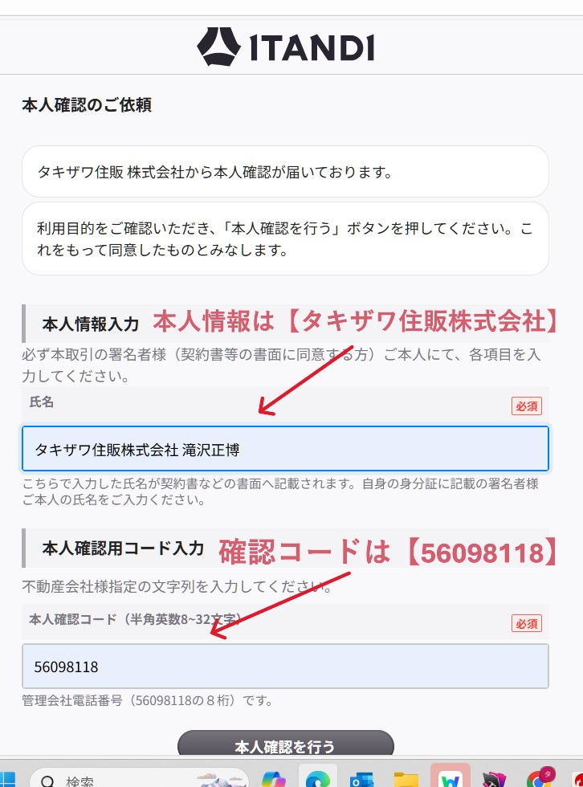
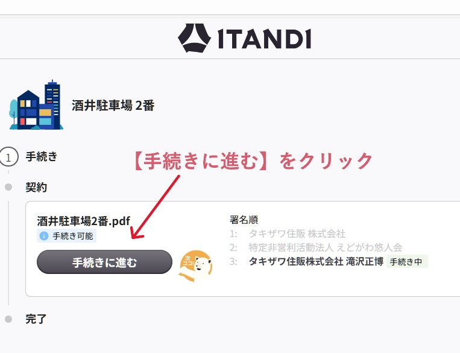
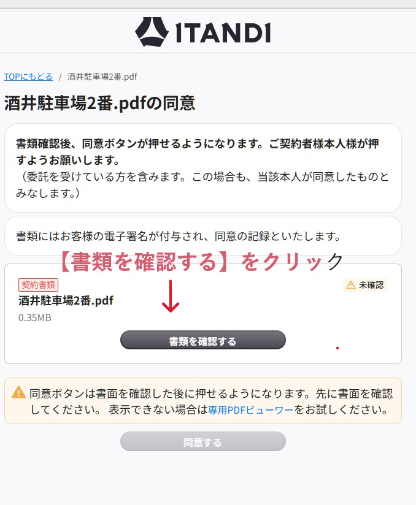
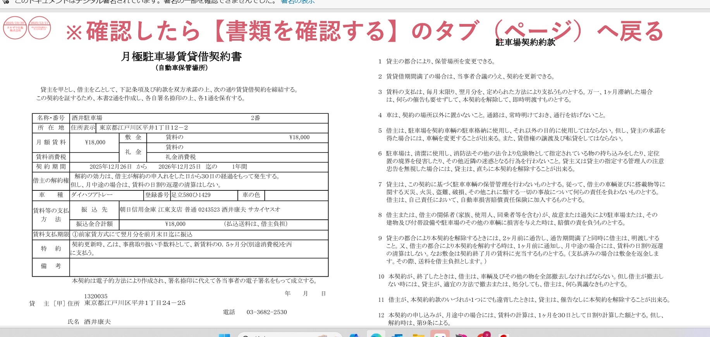
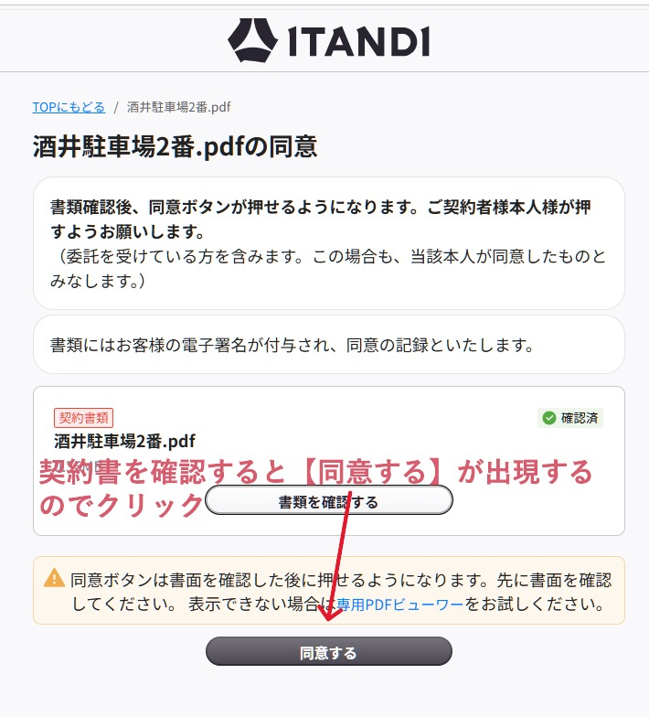
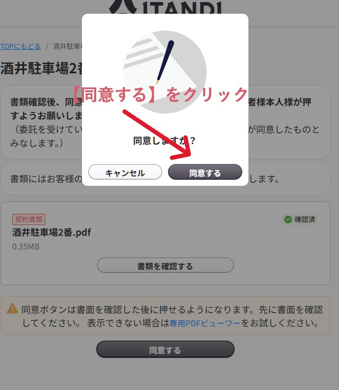
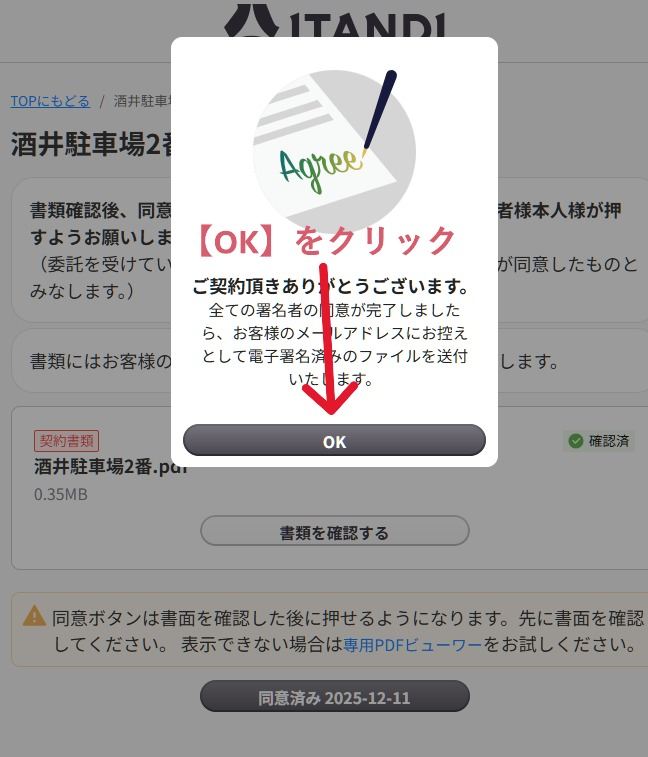
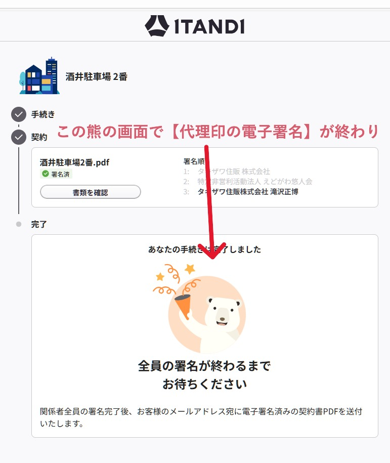
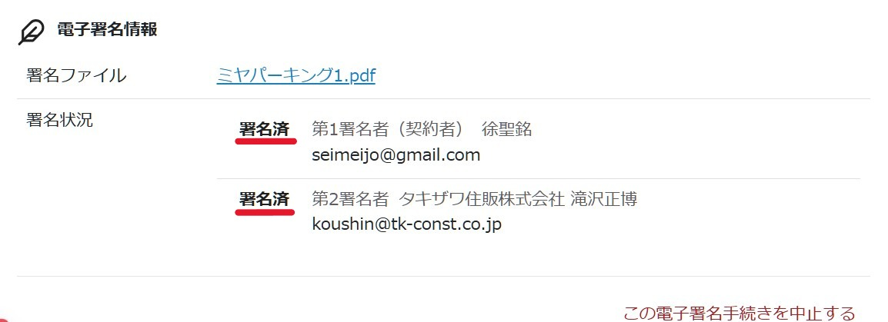

電子署名の画面付きマニュアル
1．電子署名の通知メールを開き【更新手続開始】ボタンから始める
通知のメールから始める
更新ワークフローで第2署名者の設定したメールに電子署名の通知が届く
2．チェックボックスにチェックを入れる
電子契約を始めるをクリック
3つのチェックっクス➡電子契約を始める
3．氏名と本人確認コードを入力し、本人確認を行うをクリック
氏名【タキザワ住販株式会社】コード【56098118】
-->

電子署名の進め方
ここで入力した氏名が電子署名になる
4．手続きに進むをクリック
手続きに進む
-->

電子署名の進め方
5．書類確認と同意をする①
書類確認をクリック
-->

電子署名の進め方
クリック後に別タフで契約書が表示されます
6．契約書を確認する
駐車場名と契約期間を確認
-->

電子署名の進め方
別タブで表示されている場合は1つ前のタブに切り替える
7．同意するをクリック
契約書を確認してから戻ると同意ボタンが表示されクリックできるようになる
-->

電子署名の進め方
8．同意するをクリック
同意の選択フォームが表示される
-->

電子署名の進め方
9．OKをクリック
OKの選択フォームが表示される
-->

電子署名の進め方
10．電子署名完了
書類確認をすると電子署名が３つ並んでいる
-->

電子署名の進め方
最後に熊が表示されて代理の電子署名が完了です
11．電子署名済を確認して更新ステータスを更新完了へ進める
電子契約中から更新完了にステータスを進める
-->

電子署名の進め方
駐車場の更新作業完了